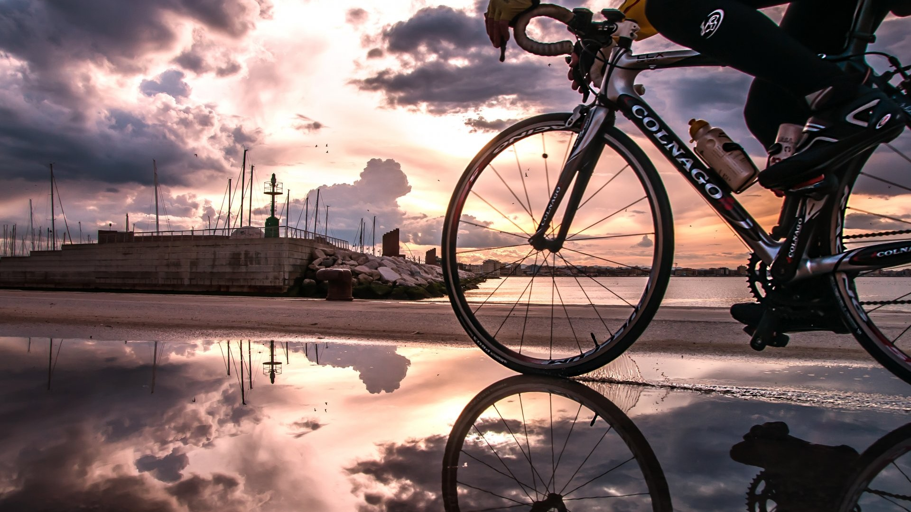

Best bikes in town

In a city where traffic jams are becoming increasingly commonplace,
bicycles are becoming a more popular means of transportation.
Comfortable bicycles provide a smooth ride and minimize physical strain during city commutes.
When it comes to choosing the best bicycles in town,
reliability and performance become crucial factors.
They should be equipped with high-quality parts and components
that guarantee a long service life and minimal breakdowns.
The best bicycles in town will not only be reliable means of transportation
but also fashionable accessories.